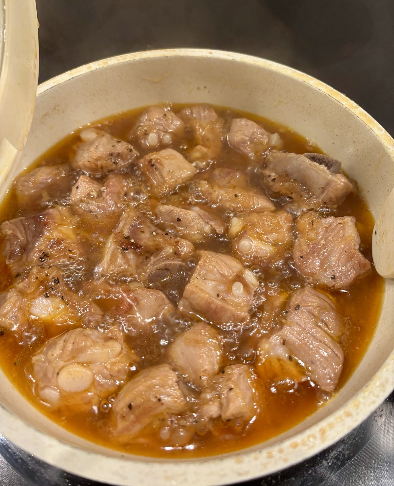

Sườn Rim Nước Mắm
Tender pork ribs braised in a savoury-sweet fish sauce glaze. Best with steamed rice or creamy mashed potatoes.

Ingredients
- Baby back ribs or pork spare ribs
- 1 large shallot — more shallot makes it better
- 3–4 tsp fish sauce
- 2 small pieces palm sugar, or brown sugar
- 1 tsp seasoning powder
- 1 tsp chili sauce
- ½–1 tsp vinegar or lime juice, to taste
- Black pepper
- 1–2 tsp cooking oil
Method
Prepare
Rinse the ribs. Blanch briefly in boiling water, then drain.
Sear
Sear in a dry pan until lightly browned. When the ribs release some fat and firm up, add oil and shallot; stir-fry 1–2 minutes.
Season
Add fish sauce, sugar, seasoning powder, pepper, chili sauce and vinegar or lime. Cook 3–5 minutes over low heat.
Braise
Add water to just cover the ribs. Braise over medium heat for about 45 minutes. For a thicker sauce, cook up to 10 minutes longer without reducing it too far.
Finish
Add black pepper, taste, and adjust with fish sauce or sugar if needed.
Sườn Rim Nước Mắm
Nguyên liệu
- Sườn non
- 1 củ hành tím lớn
- 3–4 muỗng cà phê nước mắm
- 2 viên đường thốt nốt nhỏ hoặc đường vàng
- 1 muỗng hạt nêm
- 1 muỗng tương ớt
- ½–1 muỗng giấm hoặc cốt chanh, tùy khẩu vị
- Tiêu
- 1–2 muỗng cà phê dầu ăn
Cách làm
1. Rửa sườn, chần nhanh qua nước sôi rồi để ráo.
2. Áp chảo không dầu cho sườn thơm và xém nhẹ. Khi sườn săn lại, thêm dầu và hành tím, đảo 1–2 phút.
3. Cho nước mắm, đường, hạt nêm, tiêu, tương ớt và giấm/cốt chanh. Xào lửa nhỏ 3–5 phút.
4. Cho nước vừa ngập sườn. Rim lửa vừa khoảng 45 phút; có thể thêm tối đa 10 phút để sốt sánh hơn.
5. Thêm tiêu, nếm lại và điều chỉnh nước mắm hoặc đường nếu cần.